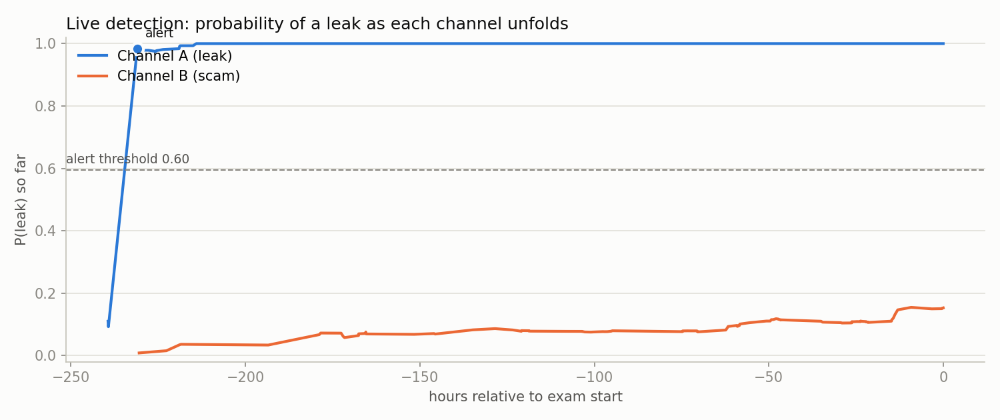

🔒 1. Custody Layer: Cryptographic & Hardware Time-Lock
Core Principle: Plaintext paper never touches the network before the exam window opens. No single individual, server, or authority has the technical capability to release the paper unilaterally.
End-to-End 9-Step Data Flow
From air-gapped authoring to in-memory enclave decryption at the exam center.

Figure 1: Sequential 9-step custody lifecycle with parallel ledger-anchored detection.
Threshold-Locked Architecture
4 independent stakeholders (NTA, State Board, Independent Audit, Custodian) holding Shamir 3-of-4 shares.

Figure 2: Multi-party threshold custody with TPM/TEE and Pietrzak VDF time-locking.
The 9-Step Custody Lifecycle Table
| Step | Phase | Security Mechanism | Guaranteed Property |
|---|
| 1 | Air-gapped Authoring | Offline generation of paper and plaintext | No network transmission of unencrypted paper |
| 2 | AES-256-GCM Encryption | Authenticated encryption with metadata AAD | Tamper detection bound to Center ID and timestamps |
| 3 | Ledger Commitment | Ed25519 co-signed hash chain of hash(paper) | Provable mathematical verification for audits |
| 4 | Post-Quantum Key Split | ML-KEM-768 wrap + Shamir 3-of-4 over GF(2⁸) | Quantum-safe harvest resistance; eliminates single-point trust |
| 5 | Hardware State Sealing | TPM 2.0 PCR extension (0, 1, 2) | Key shares locked to verified, unmodified OS/boot state |
| 6 | VDF Time Computation | Pietrzak Verifiable Delay Function (2^T squarings) | Provable elapsed time without trusting server clocks |
| 7 | Conditional Release | Cryptographic AND-Gate (VDF ok ∧ TPM ok) | Prevents early release and refuses tampered machines |
| 8 | Enclave Reconstruction | Assembly inside isolated TEE Enclave memory | Recovered master key never touches vulnerable RAM |
| 9 | Exam Time Decryption | Decryption at exam start; active dead-man's switch | Plaintext exists only during exam window; self-erases on tamper |
🧠 2. Neural Network Detection Layer (Explainable ML)
Real-Time Multimodal Monitoring: Operates independently in parallel with the custody chain to catch leaks unfolding on Telegram, WhatsApp, and social channels.
Detection Pipeline Architecture
Four independent branches feeding a stacking logistic fusion engine with complete explainability.

Figure 3: Four detection branches (GNN, Text, Autoencoder, Vision) fused into P(leak).
Streaming Leak Timeline Demo
Replay of a real leak channel vs. a scam channel: real leak triggers forensic alert in hours; scam channel stays silent.

Figure 4: P(leak) progression over time, showing sudden alert on leak vs. scam channel rejection.
🎤 4. What to Tell Your Professor (Viva Presentation Script)
The 3-Minute Elevator Pitch
"Respected Professor, paper leaks in national examinations like NEET-UG and Vyapam fail not because of external hackers, but because authorized insiders (press operators, custodians, or directors) access the plaintext paper early.
Our system, AINN, provides a dual-layer solution:
1. Custody Layer: We use Post-Quantum ML-KEM-768 and 3-of-4 Shamir's Secret Sharing across independent institutions (NTA, Board, Audit, Custodian). Key release is governed by an AND-gate: it requires both hardware TPM 2.0 boot attestation AND a Verifiable Delay Function (VDF) mathematical proof of elapsed time. No single official or server can decrypt the paper early.
2. Detection Layer: We built an explainable multi-modal ML detector combining PyTorch Geometric GraphSAGE for cascade spread, ORB+RANSAC computer vision for mobile phone photos, and character n-gram matching against a pre-committed ledger hash. Under strict 8-fold Leave-One-Paper-Out cross-validation on real JEE Advanced papers, it achieves an F1 of 0.920 and flags 97.8% of leaks before the exam starts."
Top Questions Your Professor Will Ask & Your Winning Answers
Q1: "Why did you use Shamir Secret Sharing instead of standard public-key encryption?"
Answer: Standard public-key encryption still relies on a single trusted server holding the private key. In cases like Vyapam and NEET-UG, institutional corruption compromised the central authority. Shamir's 3-of-4 threshold guarantees that at least 3 separate, mutually distrusting bodies (e.g. NTA, State Board, Independent Audit) must cooperate to release the paper.
Q2: "What is a Verifiable Delay Function (VDF) and why not just check the server clock (NTP)?"
Answer: Server clocks can be spoofed or NTP traffic manipulated by an insider with root access. A VDF (Pietrzak construction) requires computing sequential modular squarings (y = x^(2^T) mod N). It is mathematically impossible to speed up even with massive parallel GPUs. It proves that wall-clock time has physically elapsed without trusting any external clock.
Q3: "Why did you replace pHash with ORB + RANSAC for photographed pages?"
Answer: Traditional perceptual hashing (pHash) fails on smartphone photos taken under angles, shadows, or perspective skew (dropping to near chance). ORB detects scale- and rotation-invariant feature keypoints, and RANSAC computes homography to verify if the photo geometrically matches a committed exam page, giving 0.93–1.00 recall on real camera shots.
Q4: "What is Leave-One-Paper-Out Cross-Validation (LOPO-CV) and why does it matter?"
Answer: If an ML model trains and tests on the same question pool, it simply memorizes questions, creating severe data leakage. In our evaluation, the test exam paper is strictly held out and never seen during training. Achieving an F1 of 0.920 on completely unseen exam papers proves genuine semantic and cascade generalization.
Q5: "How does your system prevent false alarms on scam channels?"
Answer: Many Telegram channels scam students by saying 'Original NEET paper, pay ₹5000' while posting fake questions. Because our system anchors detection against the Ed25519 pre-committed hash of the genuine paper, scam channels produce zero content/vision overlap and are safely rejected, maintaining a 1.5% false positive rate on normal channels.